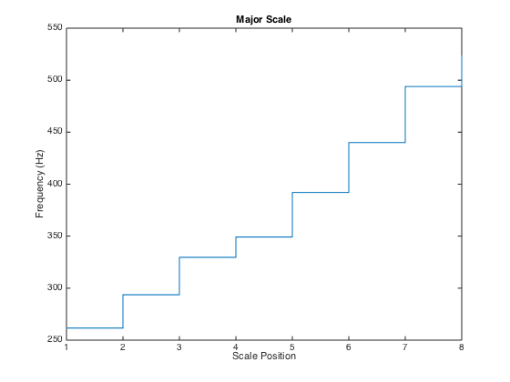
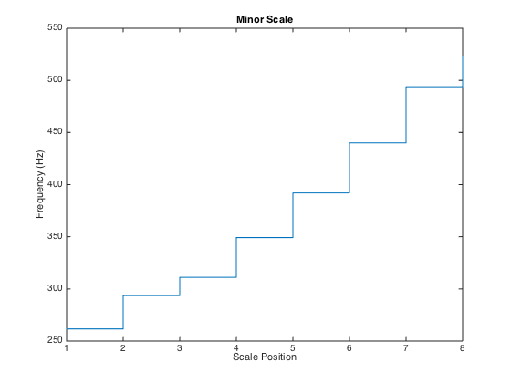

Exercise 1.5.
Using (1.1), compute the center frequencies for all notes of the C-major scale C4, D4, E4, F4, G4, A4, B4, C5 and for all notes of the C-minor scale C4, D4, Eb4, F4, G4, Ab4, Bb4, C5 (see also Figure 1.5).
Contents
Define center frequency for pitch A4 to be 440 Hz.
freq_A4 = 440; freq_pitch = @(p) freq_A4 * 2.^((p-69)/12); disp(freq_pitch(69));
Major Scale
Defining a template for a major scale as an anonymous function.
template_scale_major = @(start) start + [0, 2, 4, 5, 7, 9, 11, 12]; % Calling the function with C4 as starting note. scale_c_maj = freq_pitch(template_scale_major(60)); disp(scale_c_maj); stairs([1:numel(scale_c_maj)]-0.5, scale_c_maj); title('Major Scale') xlabel('Scale Position') ylabel('Frequency (Hz)')
Minor Scale
Defining a template for a minor scale as an anonymous function.
template_scale_minor = @(start) start + [0, 2, 3, 5, 7, 8, 10, 12]; % Calling the function with C4 as starting note. scale_c_min = freq_pitch(template_scale_minor(60)); disp(scale_c_min); figure; stairs([1:numel(scale_c_min)]-0.5, scale_c_min); title('Minor Scale') xlabel('Scale Position') ylabel('Frequency (Hz)')
440 Columns 1 through 7 261.6256 293.6648 329.6276 349.2282 391.9954 440.0000 493.8833 Column 8 523.2511 Columns 1 through 7 261.6256 293.6648 311.1270 349.2282 391.9954 415.3047 466.1638 Column 8 523.2511 